Практика · журнал «ДентАрт» 2015 №2
Центральне співвідношення. Частина 1
CENTRIC RELATION
Центральне співвідношення, про яке йдеться в цій статті, — цікава і захоплива тема. Щоб розібратися, навіщо нам потрібне це положення і що дає його визначення, варто поговорити про ЖИТТЯ. Так, про життя, у широкому розумінні, про те, завдяки чому воно існує і розвивається. Про те, ЯК організм може існувати в мінливому середовищі. Це можливо лише в одному випадку: змінюється середовище — змінюється організм! У складних організмів зміни мають функціональний характер, а більш примітивні можуть змінювати й свою структуру. Складний організм змінює свою структуру лише тоді, коли функціональна адаптація вичерпана. Чому?
Один з основних законів, за яким ми існуємо: максимальна функція за мінімальних витрат енергії. Усе просто і раціонально! Організм поводиться саме так, адже він не знає про існування лікарів, зокрема й стоматологів. Організм може покладатися тільки на себе, на ті механізми, які сформувалися в процесі еволюції.
Тепер про адаптацію. Чи всі люди однаково пристосовуються? Це саме питання можна поставити інакше: чи всі люди однаково здорові? Механізми однакові, а от ступінь адаптації різний, тому ступінь, або ширина, адаптаційного «коридору» цікавить нас насамперед.
Під час обстеження пацієнта необхідно відповісти на запитання: чи здоровий пацієнт і наскільки близько до межі компенсаторних можливостей він перебуває?
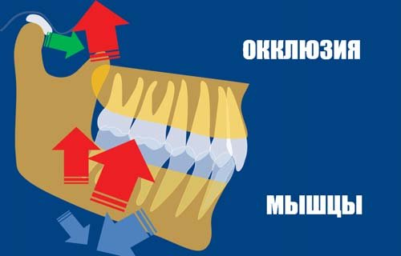
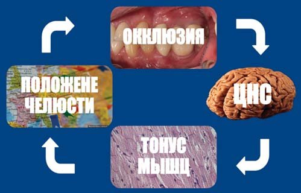
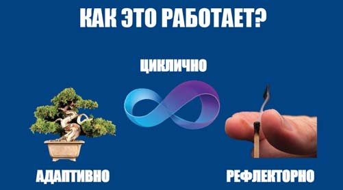
Організм — це система, що саморегулюється: рецептори, м'язи і центральна нервова система утворюють замкнене адаптивне коло, яке циклічно й рефлекторно підлаштовує положення нижньої щелепи під поточну функцію.
Організм — це не що інше, як система, що саморегулюється, зі зворотним зв'язком. Більшість дій здійснюється рефлекторно, неусвідомлено (зокрема й процес пережовування їжі), але рефлекси не є незмінними. Нервова система завдяки рецепторам контролює результат дії та коригує функцію. Завдяки цьому відбувається як формування рефлексів, так і їхнє гальмування.
Чим же визначене положення нижньої щелепи? Нижня щелепа не закріплена, вона підвішена до черепа зв'язками, і від їхнього тонусу залежить положення спокою.
Положення фізіологічного спокою — це положення нижньої щелепи, яке визначається тонусом жувальних м'язів, коли людина стоїть або сидить вертикально, при цьому між зубами-антагоністами є простір різних розмірів.
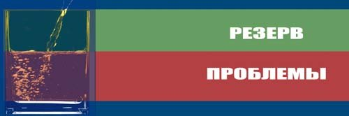
Адаптаційний «коридор» має межу: доки функціональні можливості організму не вичерпані, зміни залишаються оборотними, але за її межею починаються вже структурні порушення.
Водночас для виконання основної функції — подрібнення їжі — необхідне досягнення максимальної кількості контактів між зубними рядами. Потрібна максимальна функція! І нервова система після аналізу інформації від рецепторів передає команди для роботи м'язів, які й приведуть нижню щелепу в найбільш ефективну для виконання функції позицію. Це так звана звична оклюзія, або позиція міжгорбкового контакту.
Коли лікар-стоматолог змінює, навіть незначно, оклюзійну поверхню зубів, він змушує організм перебудувати рефлекторні рухи і положення нижньої щелепи. Ми стикаємося з таким регулярно!
— Заважає?
— Не можу зрозуміти…
— Зачекаймо.
Через деякий час:
— Ну як?
— Уже не заважає! Звик!
Пізнаючи світ, ми завжди порівнюємо з нашим попереднім досвідом або порівнюємо об'єкти між собою. Як же визначити можливості компенсації, обійти адаптивні зміни, знайти оптимальне положення щелепи? Чи існує відтворюване положення щелепи? Що і з чим ми маємо порівняти і який орієнтир обрати?
Ми не можемо брати за орієнтир оклюзійні контакти, адже саме їх ми хочемо проаналізувати. Також як орієнтир не підходять м'язові структури як найбільш лабільний елемент системи. Залишаються парні скронево-нижньощелепні суглоби. Але будова скронево-нижньощелепного суглоба унікальна для нашого організму. Це парний суглоб, де ні права, ні ліва частина не має повної «свободи».
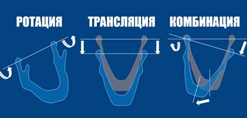
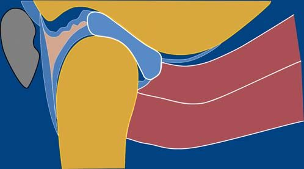
Рух парних суглобових голівок — спільний, відбувається у всіх трьох площинах і поєднується з ротацією; неконгруентність суглобових поверхонь компенсує суглобовий диск, що розділяє суглоб на верхній (трансляційний) і нижній (ротаційний) поверхи.
Рух парних суглобових голівок спільний, відбувається у всіх трьох площинах і поєднується з ротацією. Це можливо завдяки особливостям будови суглобів.
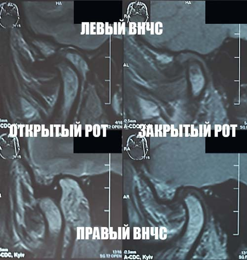
Для прикладу — магнітно-резонансна томограма скронево-нижньощелепного суглоба, на якій видно взаємне розташування суглобових елементів: невправна дислокація диска у правому та компресія диска в лівому скронево-нижньощелепному суглобі (лівий/правий ВНЩС, відкритий/закритий рот).
Для прикладу нижче наведено магнітно-резонансну томограму скронево-нижньощелепного суглоба, на якій видно взаємне розташування суглобових елементів. Відзначається невправна дислокація диска у правому та компресія диска в лівому скронево-нижньощелепному суглобі. Як сформувалося таке положення голівок і дисків? Це не що інше, як адаптація! Це вже не функціональні, а структурні зміни, на які змушений піти організм для виконання функції. Звісно, можуть мати місце й анатомічні передумови, але в цьому випадку — це результат послідовних і методичних помилок стоматологів.
Неконгруентність суглобових поверхонь компенсується суглобовим диском, який ніби розділяє суглоб на верхній і нижній поверхи. Якщо уявити, що ми маємо не один суглоб, а два — верхній і нижній, то все стає на «свої місця». Верхній відповідає за трансляцію, а нижній — за ротаційний компонент руху.
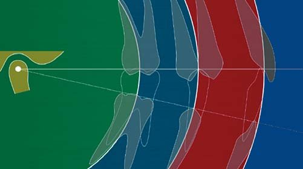
При відкриванні рота ці рухи поєднуються, але в початковій фазі переважає ротація, потім — комбінація ротації і трансляції.
При відкриванні рота ці рухи поєднуються, але в початковій фазі переважає ротація, потім — комбінація ротації і трансляції.
Однак існує таке взаємне розташування суглобових елементів, яке є ортопедично стабільним і забезпечує положення суглоба, у якому він здатен переносити максимальне навантаження. Саме це відтворюване положення і називається центральним співвідношенням.
Центральне співвідношення — ключ до реставраційної стоматології!
(Пітер Доусон)
Центральне співвідношення — це відтворюване положення нижньої щелепи, при якому виростки займають передньоверхнє положення і контактують із центральною частиною суглобового диска, розташованого навпроти заднього схилу суглобового горбка.
Це положення дає нам можливість багаторазового відтворення на всіх етапах лікування і є оптимальним для проведення діагностичних та реконструктивних заходів.
Центральне співвідношення не визначається оклюзією. Аналізуючи оклюзію, ми можемо зіткнутися як зі збігом центрального співвідношення зі звичною оклюзією, і це положення логічно назвати центральною оклюзією, так і з незбігом, який відзначається у 90% людей.
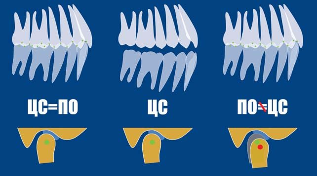
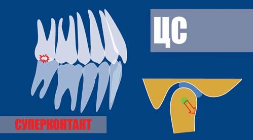
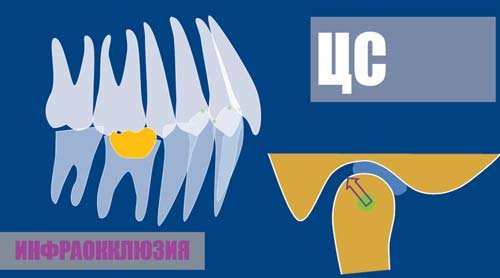
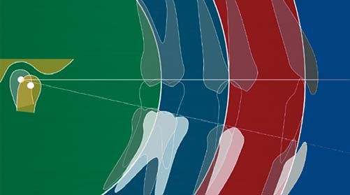
Два основні види неоптимальної оклюзії: суперконтакт (передчасний контакт, що виникає внаслідок деформації зубного ряду чи проведеного лікування) і незбіг центрального співвідношення зі звичною оклюзією.
Можна виділити два основні види неоптимальної оклюзії. Перший — так званий суперконтакт (суперконтакти), або передчасний контакт, що виникає внаслідок деформації зубного ряду або проведеного лікування. Це змушує м'язи «обходити» перешкоду для досягнення оптимальної функції.
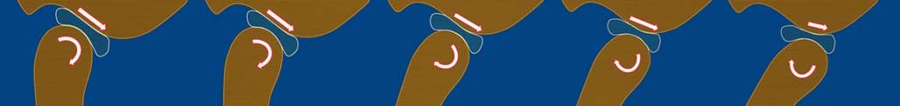
Другий вид — інфраоклюзія одного або групи зубів, що виникає внаслідок руйнування, втрати або нераціональної реставрації зубів, зубних рядів. Ця проблема змушує м'язи «дотискати» нижню щелепу до отримання максимальної кількості контактів.
Досить частою проблемою є проведення ортодонтичного лікування без урахування гармонії між скронево-нижньощелепним суглобом і оклюзійними взаємовідношеннями.
Неоптимальна оклюзія, або вимушене положення щелепи, потребує підвищених витрат енергії на підтримання гіпертонусу м'язів. Організм намагатиметься відновити оптимум. М'язам буде дано сигнал усунути перешкоди, чи то гіперконтакт, чи нормальний контакт при інфраоклюзії. Міцність ланцюга визначається міцністю найслабшої ланки. Якщо найслабшою виявиться пародонт — на пацієнта чекають підвищена рухомість зубів, деформації; якщо тканини зуба — стирання, сколи, переломи, клиноподібні дефекти; якщо м'язи — біль, міалгії; якщо суглоби — суглобова компенсація або захворювання скронево-нижньощелепного суглоба.
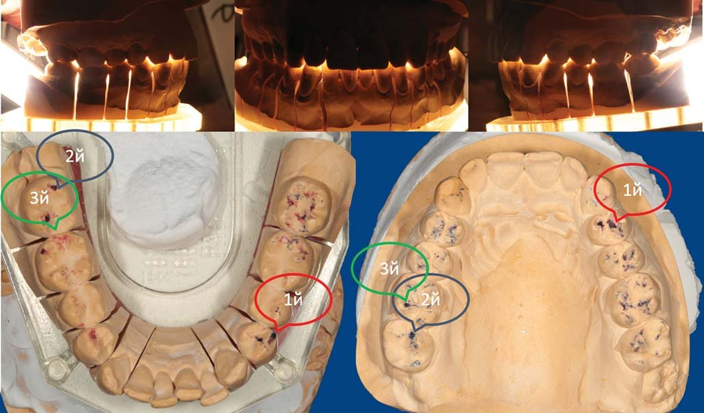
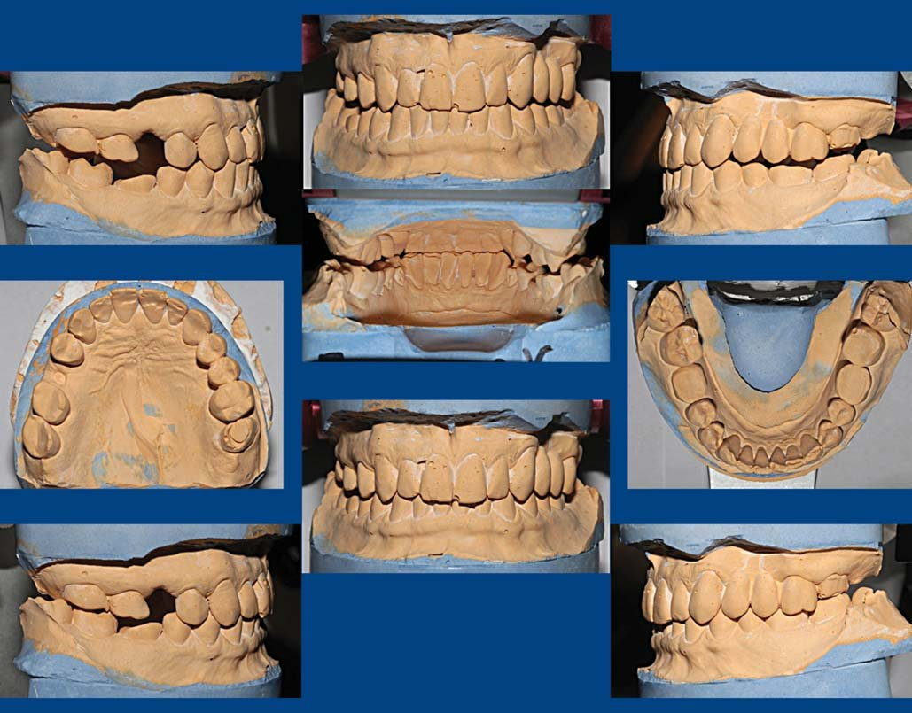
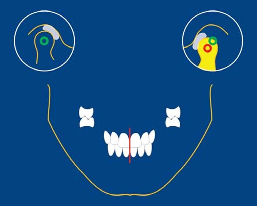
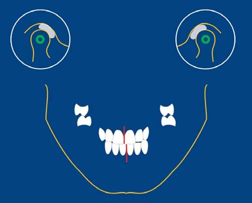
Клінічна реєстрація оклюзії та аналіз гіпсових моделей — практичні інструменти, за допомогою яких можна зіставити звичну оклюзію пацієнта з відтворюваним положенням щелепи.
У наступній частині циклу будуть описані методики та умови проведення реєстрації центрального співвідношення.
Література
- Cuman G., Masnata R., Nannini C., Baldin M. Изготовление полносъемных протезов по методу Славичека. М: ООО «Медицинская пресса», 2009. — 138 с.
- Дапприх Ю., Ойдтманн Э. М. Протезирование при полной адентии. М.: Азбука, 2007. — 175 с.
- Славичек Р. Жевательный орган. Функции и дисфункции. М.: Азбука, 2008. – 543 с.
- Клинеберг И., Джагер Р. Окклюзия и клиническая практика. М.: Медпресс-информ, 2006. — 200 с.
- Манфредини Д. Височно-нижнечелюстные расстройства. М., СПб., К.: Азбука, 2008.
- Зойберт Гюнтер. Азбука зуботехнического мастерства. Принципы анатомического воскового моделирования по Шульцу. Москва: Азбука, 2007. — 141 с.
- Ховат А.П., Капп Н.Д., Барретт Н.В.Д. Окклюзия и патология окклюзии. Цветной атлас. М.: Азбука, 2005. — 233 с.
- Хайман Смуклер. Нормализация окклюзии при наличии интактных и восстановленных зубов. М.: Азбука, 2006. — 136 с.
- Майкл Уайз. Ошибки протезирования. Лечение пациентов с несостоятельностью зубного ряда. М.: Азбука, 2005. — 408 с.